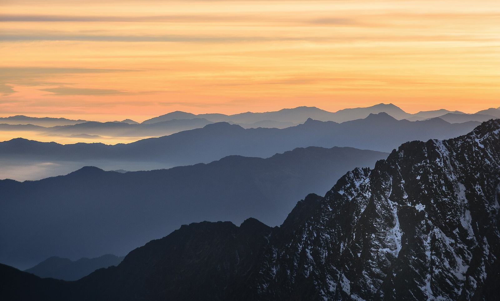
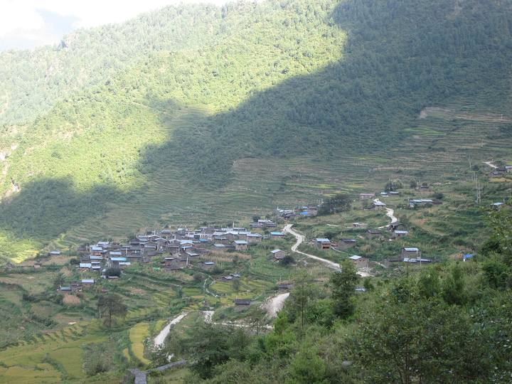

Langtang, Gosaikunda and Helambu
A 13-day traverse: up the Langtang valley to Kyanjin Gompa, across to the Gosaikunda lakes, over the Laurebina La and down the Helambu ridge to Sundarijal.


- Duration
- 12–16 days
- Distance
- 140 kmapproximate
- Highest point
- 4,773 mKyanjin Ri · 15,659 ft
- Highest night
- 4,380 mGosaikunda
- Difficulty
- ChallengingTeahouse lodges
- Best months
- Apr–May, Oct–Nov
Is this trek right for me?
The walking
13 days in all. Most walking days are 5 to 7 hours on foot, and the longest is about 8 hours. Long days and several nights above 4,000 m, or a pass above 5,000 m.
The height
You sleep as high as 4,380 m. Most people feel the altitude at this height. The plan includes the rest days you need: do not shorten it.
Where you sleep
In lodges every night: a simple twin room, a shared bathroom and hot meals in a warm dining room.
The help you need
The rules require a licensed guide on this route. A porter to carry your bag is your choice.
What it costs
A guided trip with a trekking company usually costs USD 700 to 1,000 a person, going by the prices 8 companies published for 2026.
Overview
This is the full tour of the mountains north of Kathmandu, and it ends by walking into the capital's own valley. It strings three shorter treks together: the Langtang valley to Kyanjin Gompa, the climb from Thulo Syabru to the Gosaikunda lakes, and the Helambu ridge south to Sundarijal. Each has a different character, and the links between them, which few people on the shorter treks see, are some of the best walking.
The order matters. By going to Kyanjin Gompa first you spend two nights at 3,870 m and climb to nearly 4,800 m before you see Gosaikunda, so the fast ascent that makes the lakes risky from Dhunche is far less of a problem. What stays hard is the day over the Laurebina La: a 4,610 m pass, then hours of rough descent and traverse to Ghopte, with only the lodges at Phedi on the way. In snow or cloud it is a serious day.
Lodges cover every stage, though those between the lake and Tharepati are few and basic. Plan on 12 to 16 days. As of November 2026 the first stage is affected by the Bhote Koshi flood of that August, which cut the road to Syabrubesi; groups have been starting from Dhunche or Thulo Syabru and joining the valley trail near Bamboo. The Gosaikunda and Helambu sections were not in the flood's path.
Highlights
- Three treks in one: glacial valley, sacred lakes and forested ridge
- Kyanjin Gompa and the climb to Kyanjin Ri at 4,773 m
- Reaching the Gosaikunda lakes already acclimatized
- Crossing the Laurebina La into Helambu
- Finishing on foot at the edge of the Kathmandu Valley
Challenging: No single day is extreme, but it is nearly two weeks with three big climbs, a 4,610 m pass that holds snow and a long descent beyond it with little shelter.
Altitude profile
Height at the end of each day, with the high points in between. Dots are the places you sleep.
2 nights gain height faster than the usual guideline. That is common on standard itineraries, but it is where problems start. Check how you feel before each of these climbs.
- Day 8, Chandanbari: A climb of 1,120 m in one day, to sleep at 3,330 m. Go slowly, drink plenty, and say so if you get a headache.
- Day 9, Gosaikunda: Sleeping altitude rises 1,050 m in one day, well over the 500 m guideline. Split the climb if you can. About 1,400 m gained above 3,000 m without a rest night.
Try adding a night in the acclimatization checker · Check your symptoms
Day by day
About 60–74 h of walking in total. Times are for a steady pace with short breaks; add more for photos and tea.
-
Day1
Drive from Kathmandu to Syabrubesi
The Pasang Lhamu Highway through Trishuli Bazaar and Dhunche, where park permits are checked. With the road cut short of Syabrubesi since the August 2026 flood, expect to start from Dhunche or Thulo Syabru instead and adjust the next day to suit.
2 places to stay in Syabrubesi, such as White House and Kerung Himalaya. See them
Travel day- Sleep at
- 1,460 m
- Change
- +60 m
- Drive
- 7–9 h
-
Day2
Syabrubesi to Lama Hotel
Syabrubesi to Bamboo to Rimche to Lama Hotel
Into the gorge of the Langtang Khola: shady forest, a rising trail and the river loud beside you all day. Bamboo is the natural lunch stop. Keep something in reserve for the last steep pull to Rimche and Lama Hotel. Starting from Thulo Syabru, you join the trail just below Bamboo.
6 places to stay in Lama Hotel, such as Hotel Jungle View, Lama Guest House and Tibet Guest House. See them
- Sleep at
- 2,470 m
- Change
- +1,010 m
- Walking
- 6–7 h
- Distance
- 11 km
-
Day3
Lama Hotel to Langtang Village
Lama Hotel to Ghodatabela to Thangshyap to Langtang Village
The forest thins at Ghodatabela, where permits are checked, and the valley opens into pasture with Langtang Lirung ahead. The sleeping height rises by 960 m, so drink plenty and keep the pace gentle; Thangshyap is the fallback if you feel it. The rebuilt village lies just past the 2015 debris.
14 places to stay in Langtang Village, such as Lantang View, Glacier and Marigold Guest House. See them
- Sleep at
- 3,430 m
- Change
- +960 m
- Walking
- 6–7 h
- Distance
- 14 km
-
Day4
Langtang Village to Kyanjin Gompa
Langtang Village to Mundu to Kyanjin Gompa
A half day through Mundu and across old moraine to the last settlement in the valley. Use the afternoon for a slow walk around the gompa and the cheese factory, and an early night.
13 places to stay in Kyanjin Gompa, such as Hotel Mountain View, Yala peak hotel and Moonlight guest house. See them
- Sleep at
- 3,870 m
- Change
- +440 m
- Walking
- 3–4 h
- Distance
- 7 km
-
Day5
Kyanjin Ri and a second night at Kyanjin Gompa
Kyanjin Gompa to Kyanjin Ri to Kyanjin Gompa
Climb the ridge behind the lodges to 4,773 m for the view over the Lirung glacier, and be down for lunch. This is the acclimatization that the Gosaikunda section depends on, so do not skip it to save a day. Strong walkers can take the longer day on Tserko Ri instead.
13 places to stay in Kyanjin Gompa, such as Hotel Mountain View, Yala peak hotel and Moonlight guest house. See them
High point day- Sleep at
- 3,870 m
- Change
- 0 m
- High point
- 4,773 m
- Walking
- 4–5 h
-
Day6
Kyanjin Gompa to Lama Hotel
Kyanjin Gompa to Langtang Village to Ghodatabela to Lama Hotel
Back down the valley in one long, mostly downhill day. The thicker air is welcome; the pounding on your knees is not. Stop at Rimche if Lama Hotel is full.
6 places to stay in Lama Hotel, such as Hotel Jungle View, Lama Guest House and Tibet Guest House. See them
- Sleep at
- 2,470 m
- Change
- −1,400 m
- Walking
- 6–7 h
- Distance
- 21 km
-
Day7
Lama Hotel to Thulo Syabru
Lama Hotel to Bamboo to Thulo Syabru
Follow the gorge down past Bamboo, then leave the Syabrubesi trail at the signed junction and cross a side valley to Thulo Syabru. The final climb to the village is steep and comes at the end of a long downhill morning. The slopes here slide in the monsoon; ask at Bamboo about the state of the path.
19 places to stay in Thulo Syabru, such as Hotel Himalayan 3 Brothers Guest House, Langtang view hotel & lodge and Mona Lisa. See them
- Sleep at
- 2,210 m
- Change
- −260 m
- Walking
- 5–6 h
-
Day8
Thulo Syabru to Chandanbari
A steady 1,100 m climb from the top of the village through oak, hemlock and rhododendron, past the teahouses at Dursagang and along the Foprang Danda ridge to Chandanbari. The gain is large, but you have already slept at 3,870 m, so it is hard work rather than an altitude risk.
11 places to stay in Chandanbari, such as होटल ग्रिन हिल, Hotel Tashi Delek and Hotel Peace Lodge. See them
Watch this gainA climb of 1,120 m in one day, to sleep at 3,330 m. Go slowly, drink plenty, and say so if you get a headache.
- Sleep at
- 3,330 m
- Change
- +1,120 m
- Walking
- 4–5 h
-
Day9
Chandanbari to Gosaikunda
Chandanbari to Cholangpati to Laurebina to Gosaikunda
Out of the forest at Cholangpati and up the open ridge to Laurebina, then a narrow traverse above Saraswati Kunda and Bhairav Kunda to the main lake. It is another 1,050 m of sleeping height. Most people manage it after Kyanjin Gompa; if you have any doubt, stop at Laurebina.
4 places to stay in Gosaikunda, such as Hotel Namaste, Hotel Lake Side and Hotel Tibet. See them
Fast gainSleeping altitude rises 1,050 m in one day, well over the 500 m guideline. Split the climb if you can. About 1,400 m gained above 3,000 m without a rest night.
- Sleep at
- 4,380 m
- Change
- +1,050 m
- Walking
- 5–7 h
- Distance
- 9 km
-
Day10
Over the Laurebina La to Ghopte
Gosaikunda to Laurebina La to Phedi to Ghopte
The hardest day. An hour and a half past small lakes to the 4,610 m pass, a long, rocky descent to the lodges at Phedi, then three tiring hours in and out of ravines to Ghopte. There is no shelter between the lake and Phedi. Start at first light, and do not cross in fresh snow or thick cloud.
Pass day- Sleep at
- 3,430 m
- Change
- −950 m
- High point
- 4,610 m
- Walking
- 6–8 h
-
Day11
Ghopte to Kutumsang
Ghopte to Tharepati to Magin Goth to Kutumsang
More ravines and a final climb bring you onto the ridge at Tharepati in about two hours, where you join the Helambu circuit. Ignore the branch that drops east to Melamchi Gaun and follow the ridge south, down through forest past Magin Goth to Kutumsang, where the park checkpost looks at permits.
7 places to stay in Kutumsang, such as Aana yangri, Yak Hotel & Guest House and Mountain View Lodge & Resort. See them
- Sleep at
- 2,470 m
- Change
- −960 m
- High point
- 3,690 m
- Walking
- 6–7 h
-
Day12
Kutumsang to Chisapani
Kutumsang to Golphu Bhanjyang to Chipling to Pati Bhanjyang to Chisapani
Down the ridge through Tamang farmland: Golphu Bhanjyang, a forested shoulder, the stone steps below Chipling and the saddle at Pati Bhanjyang, then a final 400 m climb to Chisapani. Dirt roads cross the trail repeatedly, so keep asking for the footpath.
10 places to stay in Chisapani, such as Hotel Annapurna Mountain View, Dorje Lakpa Hotel and Hotel B.B.C.. See them
- Sleep at
- 2,165 m
- Change
- −305 m
- Walking
- 6–7 h
-
Day13
Chisapani to Sundarijal, drive to Kathmandu
Chisapani to Borlang Bhanjyang to Mulkharka to Sundarijal
Watch the sunrise, then climb for an hour to the Borlang Bhanjyang saddle and descend through the Shivapuri forest and Mulkharka to the road at Sundarijal. A taxi or local bus has you in Thamel in under an hour.
- Walk ends at
- 1,460 m
- Change
- −705 m
- High point
- 2,420 m
- Walking
- 3–4 h
Ways to change it
Start from Dhunche and Thulo Syabru
The approach in use since the 2026 flood. Walk or ride from Dhunche to Thulo Syabru, drop to the Langtang Khola and join the valley trail below Bamboo. You return to Thulo Syabru on day seven, so spare kit can be left at a lodge there.
Extra night at Laurebina
Split day nine at the Laurebina lodges, 3,910 m. It adds a day, shortens the approach to the lake, and is the sensible choice if anyone in the group was slow to adjust at Kyanjin Gompa.
Finish through the Hyolmo villages
From Tharepati, descend east to Melamchi Gaun and continue through Tarkeghyang and Sermathang to the road at Melamchi Pul Bazaar instead of following the ridge to Sundarijal. It takes about the same time and swaps forest for villages and monasteries.
Gosaikunda and Helambu only
Start at Dhunche, climb to the lake with a night at Laurebina, then cross the pass and walk out along the ridge. This takes eight or nine days, but you reach 4,380 m without the acclimatization that Kyanjin Gompa provides.
Route map
The map loads when you scroll here. It needs a connection the first time; tiles you have viewed stay available offline.
The solid line follows footpaths mapped in OpenStreetMap. It is a guide to where the route goes, not a navigation track: trails are rerouted after landslides, so follow the signs and people on the ground. Marker positions come from OpenStreetMap where we could match a place, and from our own estimates elsewhere.
Download the trail for a map app A GPX file with 126 km of mapped path and every stop. It opens in free apps such as Organic Maps.
When to go
- January: difficult
- February: difficult
- March: good
- April: best time
- May: best time
- June: difficult
- July: difficult
- August: difficult
- September: good
- October: best time
- November: best time
- December: good
October and November are the most reliable months for the pass. April and May are warmer, with rhododendron on the Gosaikunda and Helambu ridges and more afternoon cloud. In March and December the Laurebina La may be under snow; in January and February it usually is, and lodges between the lake and Tharepati can be shut. The monsoon brings rain, leeches and landslides on the access road.
Permits and guide rules
Guide required. The Nepal Tourism Board has required foreign trekkers to hire a licensed guide since April 2023, though checks on the trail are inconsistent. On this route the guide matters most between Gosaikunda and Tharepati, where the path is easy to lose in snow or cloud and there are few lodges and fewer people. They will also know which roadhead is in use since the 2026 flood.
Langtang National Park
National parkLangtang National Park entry permit · Department of National Parks and Wildlife Conservation
| Foreign nationals | NPR 3,000 | person, single entry |
| SAARC nationals | NPR 1,500 | person, single entry |
| Nepali citizens | NPR 100 | person |
Where: At the park checkpoint in Dhunche on the drive to Syabrubesi, or in advance at the Tourist Service Centre in Bhrikutimandap, Kathmandu.
The Nepal Tourism Board and current guides agree on NPR 3,000 and NPR 1,500. Some agencies add 13% VAT to the foreigner fee (NPR 3,390); we could not confirm that it is charged, so carry the difference. NPR 100 for Nepali citizens is the standard mountain-park rate; the tourism board's page still shows an older figure.
TIMS card
RegistrationTrekkers' Information Management System card · Nepal Tourism Board and the Trekking Agencies' Association of Nepal
| Foreign nationals | NPR 2,000 | person, per trek |
| SAARC nationals | NPR 1,000 | person, per trek |
Where: Only through a registered trekking agency, which applies in the Nepal Tourism Board's online system with your route and your guide's details. Individual trekkers can no longer buy one over the counter.
Since the revised rules of 31 March 2023 the card is tied to trekking with a licensed guide on the tourism board's listed routes. It is not used in Khumbu, where the municipality's Trek Card took its place in 2017. For restricted areas the published rules pull both ways: TAAN's pages say TIMS applies in every trekking area, restricted ones included, yet also list visitors holding Department of Immigration permits among those who do not need one, and agencies disagree. Your agency, which is compulsory there anyway, will know what the checkposts on your route ask for. Reports from 2025–26 describe patchy checks of the card, especially in Annapurna.
Agency required
Shivapuri National Park
National parkShivapuri Nagarjun National Park entry ticket · Department of National Parks and Wildlife Conservation
| Foreign nationals | NPR 1,000 | person, per day and entry |
| SAARC nationals | NPR 600 | person, per day and entry |
| Nepali citizens | NPR 100 | person, per day and entry |
Where: At the park gate, for example at Sundarijal.
The park's own fee table charges per day and says SAARC and other foreign visitors must go in with a nature guide. We could not confirm how that is applied to trekkers walking through from Sundarijal to Chisapani. Bicycles and vehicles pay extra.
Fees and rules change, sometimes mid-season. Treat these as a planning guide and confirm with the Nepal Tourism Board, the Department of Immigration or a registered agency before you travel. Last reviewed 2026-11. All permits and fees
Getting there
By road to the start, and a short drive home from the finish. The classic start is Syabrubesi, seven to nine hours by bus or jeep from Machhapokhari in Kathmandu. Since the Bhote Koshi flood of August 2026 cut that road, groups have been starting from Dhunche or Thulo Syabru and joining the valley trail near Bamboo. The trek ends at Sundarijal, under an hour from Thamel.
-
Bus: Kathmandu to Syabrubesi · 7–9 h
The classic approach. Closed short of Syabrubesi since the August 2026 flood; check whether it has reopened.
-
Jeep: Kathmandu to Dhunche · 5–7 h
The working roadhead since the flood, reported open to jeeps and light vehicles. A rough track continues to Thulo Syabru when conditions allow.
-
Bus: Sundarijal to Kathmandu · 1–1.5 h
Local buses to the Ratna Park side of town, or a taxi to Thamel in about 45 minutes.
- Gateway
- Kathmandu
- Walk starts
- Syabrubesi · 1,460 m
- Walk ends
- Sundarijal · 1,460 m
Hazards on this route
The Laurebina La in snow or cloud
Between the lake and Phedi the path is marked only by cairns and worn rock, with steep ground below it. After snowfall or in cloud it is easy to lose. In the winter of 1991–92 an Australian trekker who strayed from the trail in snow near here was found alive only after 43 days. Wait a day at the lake rather than cross in bad conditions.
Altitude
The fast first stages to Kyanjin Gompa and the two-day climb from Thulo Syabru to 4,380 m both exceed the usual guidelines. The second works only because of the first, so keep both nights at Kyanjin Gompa. Stop at Laurebina, or go down, if you have a headache with nausea or unusual tiredness.
Few lodges between the lake and Tharepati
Phedi and Ghopte have only a handful of basic lodges, which can be full in October and shut in winter. Ask at Gosaikunda which are open before you cross, and carry food, water and warm clothing for the whole day.
Access after the 2026 flood
The Bhote Koshi flood of 26 August 2026 destroyed bridges and road around Syabrubesi. The trails on this route lie on other rivers and were reported open again from late October 2026, with the start moved to Dhunche or Thulo Syabru. Confirm the current roadhead before you travel.
Practical tips
- Keep a spare day in hand for the pass. Weather that closes the Laurebina La often clears within a day or two.
- Carry microspikes from November to April for the traverse to the lake and the far side of the pass.
- Bring cash for the whole trek from Kathmandu, including the Shivapuri Nagarjun National Park ticket you need on the last day.
- Pack for both ends of the scale: nights below freezing at Kyanjin Gompa and the lake, and warm, humid afternoons on the final ridge.
- Trekking poles are worth their weight here. The route has several descents of 1,000 m or more.
- Lodges at Gosaikunda, Phedi and Ghopte are simpler than those in the Langtang valley; carry a proper sleeping bag.
We know of no cash machines on this route. Carry all the rupees you need from Kathmandu. Work out how much.
Plan this trek
Choose your dates and see the whole trip on one page: where you sleep each night, who can help you, what it may cost and the papers you need. Then ask for a price.
More tools for this trek
Who can help you on this trek
The rules require a licensed guide on this route. A porter to carry your bag is your choice.
-
A trekking company that arranges everythingUsually USD 700 to 1,000 a person for everything on the trek.
-
A guide, and a porter to carry your bagAbout USD 25 to 40 a day for the guide and USD 18 to 25 for the porter.
-
A guideAbout USD 25 to 40 a day.
-
A porter to carry your bagThe rules require a licensed guide on this route.
-
On your ownThe rules require a licensed guide on this route.
Do you work on the Langtang, Gosaikunda and Helambu route as a guide, porter or company? Join TrekkSewa.
Quick answers
How long does the Langtang, Gosaikunda and Helambu trek take?
Most people take 12–16 days. The itinerary on this page is 13 days.
How high does the Langtang, Gosaikunda and Helambu trek go?
The highest point is Kyanjin Ri at 4,773 m (15,659 ft). The highest place you sleep is Gosaikunda at 4,380 m.
How difficult is it?
We grade it challenging. No single day is extreme, but it is nearly two weeks with three big climbs, a 4,610 m pass that holds snow and a long descent beyond it with little shelter.
Which permits do I need?
Langtang National Park, TIMS card, Shivapuri National Park. Fees and where to get each one are listed in the permits section above.
Do I need a guide?
The Nepal Tourism Board has required foreign trekkers to hire a licensed guide since April 2023, though checks on the trail are inconsistent. On this route the guide matters most between Gosaikunda and Tharepati, where the path is easy to lose in snow or cloud and there are few lodges and fewer people. They will also know which roadhead is in use since the 2026 flood.
When is the best time to go?
Apr–May, Oct–Nov are best. October and November are the most reliable months for the pass. April and May are warmer, with rhododendron on the Gosaikunda and Helambu ridges and more afternoon cloud. In March and December the Laurebina La may be under snow; in January and February it usually is, and lodges between the lake and Tharepati can be shut. The monsoon brings rain, leeches and landslides on the access road.
Stage plans on this route vary between operators; treat distances and times as approximate. Reviewed 2026-11. Trails, lodges and rules change; confirm locally before you rely on any detail. Report a correction.
Similar treks
More in Langtang Langtang
Langtang
Langtang Valley
Up a glacial valley to Kyanjin Gompa, a day's drive north of Kathmandu
 Langtang
Langtang
Gosaikunda
A steep ridge climb from Dhunche to Shiva's lakes at 4,380 m
 Langtang
Langtang
Helambu Circuit
A ridge and village loop through Hyolmo country, starting at the city's edge

LangtangTamang Heritage Trail
A village loop below the Tibetan border, with nights in Tamang homes